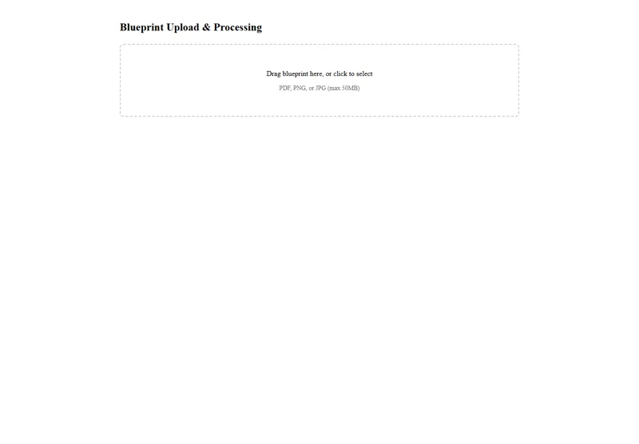
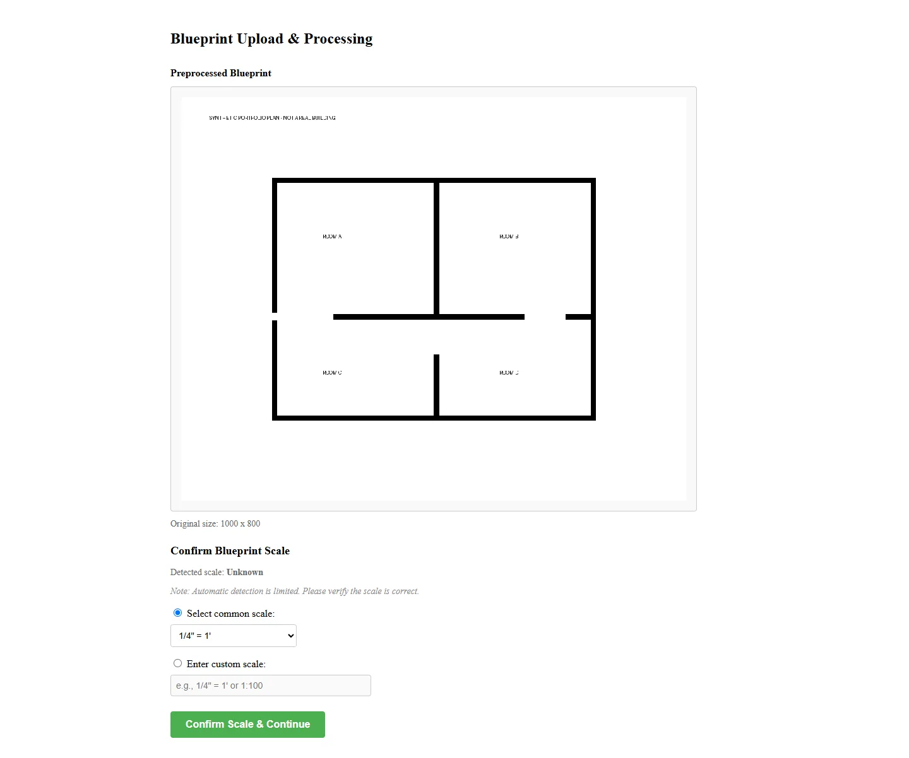
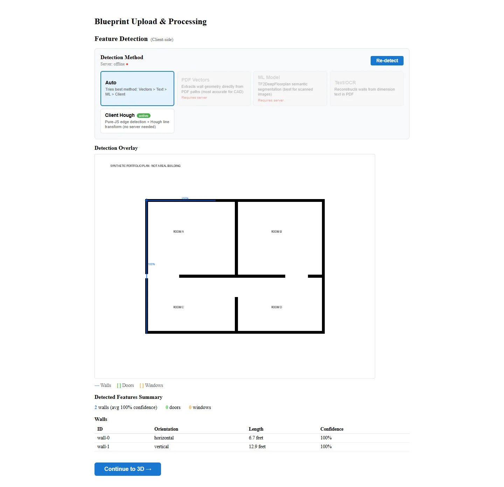
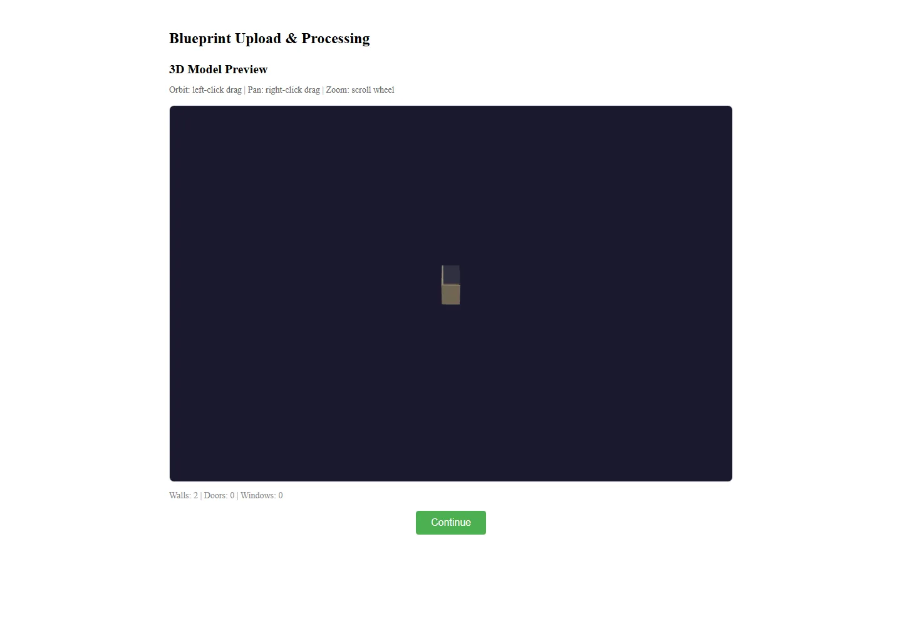

Skip to content← Back to the storyHuePrint
Photos & screenshots

Actual local HuePrint upload interface, captured from an isolated source snapshot.
Actual scale-confirmation interface using a synthetic plan; the automatic scale suggestion is a placeholder.
Actual client-side result: only two candidate walls detected from the synthetic multi-room plan.
Actual 3D stage reached with the same two-wall result.